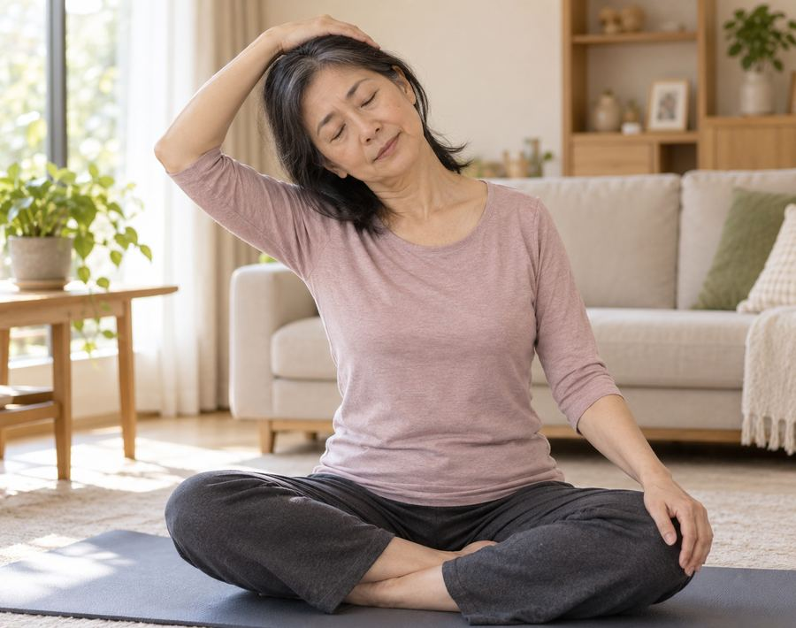
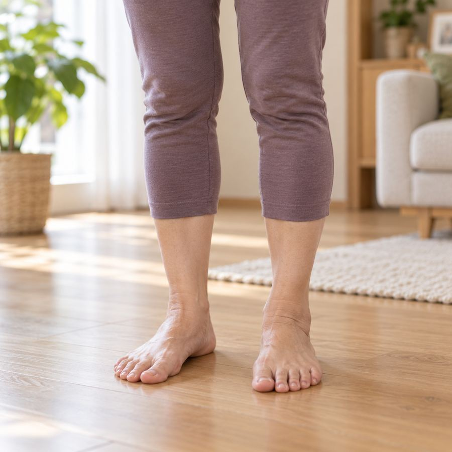
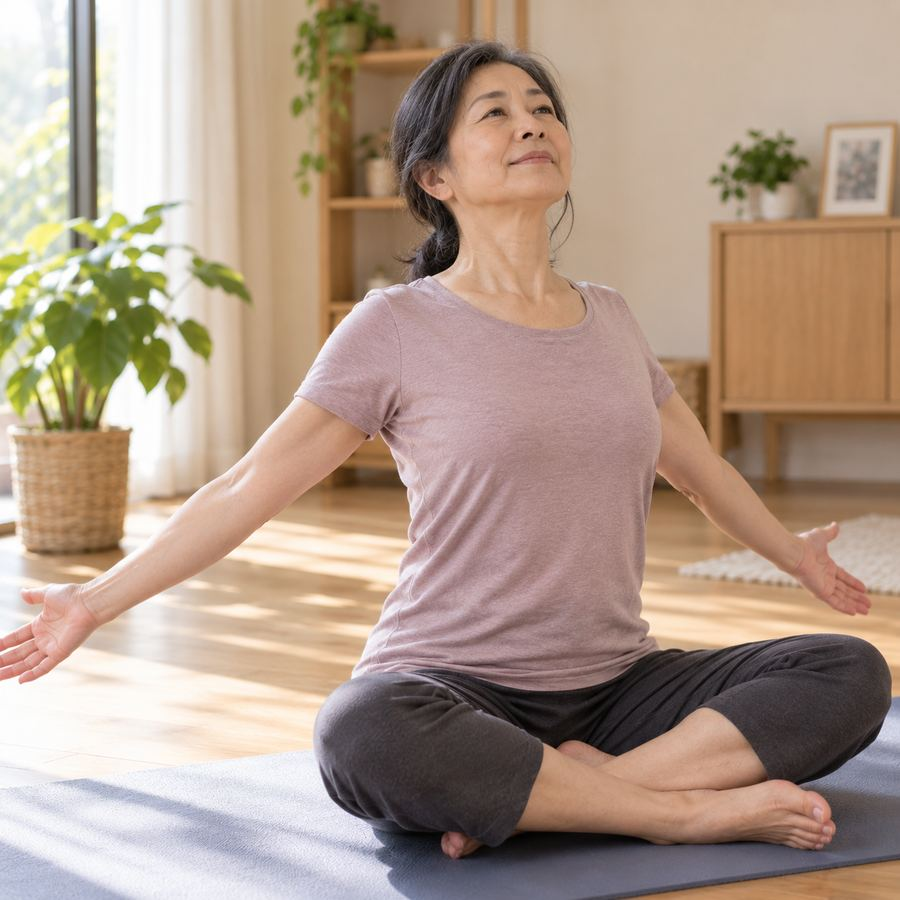
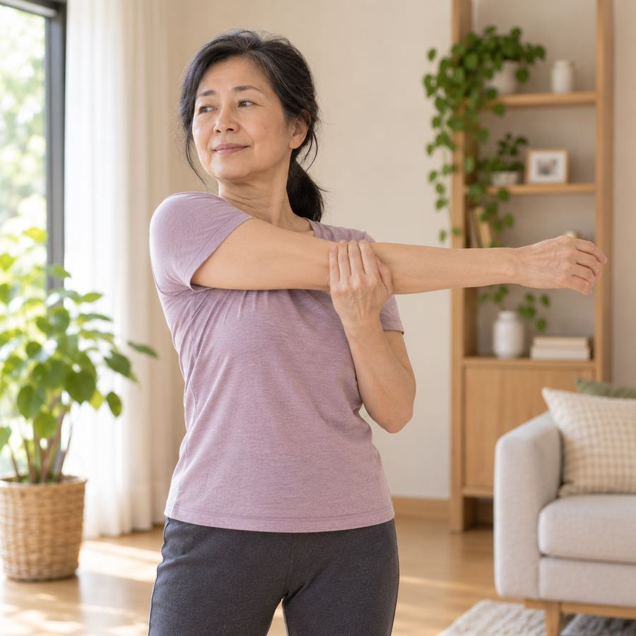
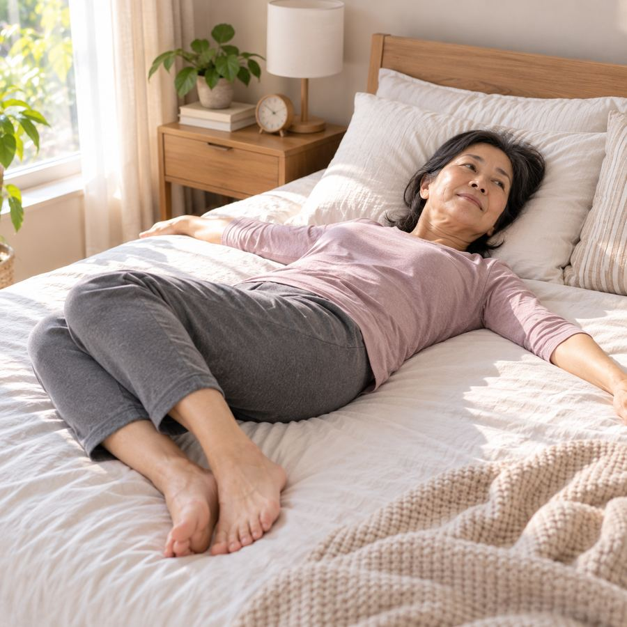
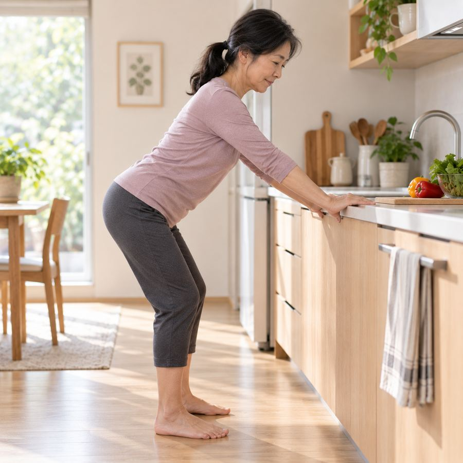

鑫彥瑜珈・高雄左營
六個日常時刻，六份動作說明書
給 58 歲以上朋友的 AI 體態檢測加贈內容——從起床、追劇到做家事，你的身體每天都在代償，這份單子陪你在家先接住。

手輕扶，不用力壓
肩膀下沉，不聳起
為什麼做這個動作？滑手機、追劇久坐時，頭會不自覺往前伸，脖子後側肌肉整段時間都在用力撐著頭的重量。這個動作讓你重新感覺「頸側被拉開」，而不是繼續用蠻力撐著。
動作重點
1坐直，右手輕扶頭部左側，頭慢慢往右肩靠近。
2左肩主動往下沉，維持自然放鬆。
3感覺左側頸部微微伸展，停留 5–8 個呼吸。
常見錯誤
✕用手用力把頭往下壓，追求角度
力道放輕，感覺到伸展就停
✕另一側肩膀跟著往上聳
聳起的肩膀主動往下放鬆
⚠ 注意
- 頸部有舊傷或明顯疼痛，先跳過此動作
- 頭暈或刺痛感，立即停止
💡 小提醒做完換邊時，感覺一下兩側是不是不一樣緊——這正是體態檢測想幫你看清楚的地方。

膝蓋放鬆，不鎖死打直
十趾放鬆，平均貼地
為什麼做這個動作？走路時偶爾覺得重心不太穩，往往不是腿沒力，而是腳底感覺變遲鈍，身體重心已經偏移，只是自己感覺不出來。
動作重點
1赤腳站立，感覺十隻腳趾平均貼地。
2重心慢慢前後、左右微移，感受腳底壓力變化。
3熟悉後可扶著椅背，練習單腳站立。
常見錯誤
✕腳趾用力抓地，像在抓毛巾
腳趾放鬆攤平，靠腳掌感受重心即可
✕膝蓋鎖死打直站著
膝蓋保持微彎，放鬆不用力
💡 小提醒這個練習沒有「做對做錯」的動作幅度，重點是每天花 1 分鐘，重新感覺自己的腳。

肩胛主動往中間靠
手臂打開，不是聳肩代替
為什麼做這個動作？想動一動、伸個懶腰時，很多人胸口、肩胛其實沒有真正參與動作，腰部只好代替出力頂上去，久了下背反而更緊。
動作重點
1坐穩，雙手慢慢往兩側打開。
2胸口慢慢往前、往上打開，肩胛往中間靠。
3感覺胸口伸展，腰部保持穩定、不過度後仰。
常見錯誤
✕手一打開就聳肩
肩膀先放鬆下沉，再打開手臂
✕腰往後仰去換取胸口打開的感覺
腰部維持中立，打開的是胸口不是腰
💡 小提醒這個動作也很適合當作起身、伸懶腰前的暖身，一天做個兩三次都可以。

手臂伸直，輕貼身前
肩膀下沉，不聳起
為什麼做這個動作？買菜提重物、或長時間手臂在身體前側用力（打字、抱東西）之後，手臂外側跟肩膀後側容易一直緊繃著，自己不容易察覺。
動作重點
1一手伸直橫過身前，另一手輕扶手肘。
2手肘朝身體方向輕壓，肩膀保持下沉。
3感覺手臂外側、肩膀後側有伸展感即可。
常見錯誤
✕用力硬拉手臂追求角度
力道放輕，感覺到伸展就停
✕身體跟著轉向，變成扭腰
上半身保持正面朝前，只有手臂在動
💡 小提醒提完重物、或打字打了一整段時間之後做這個，特別有感。

雙膝倒向一側
肩膀自然放鬆，不用勉強貼平
為什麼做這個動作？翻身、剛睜開眼那幾分鐘身體最卡。很多人一醒就直接坐起、下床，脊椎瞬間扛住全身重量，其實肌肉都還沒醒。
動作重點
1仰躺，雙膝彎曲，雙手自然打開放在身體兩側。
2雙膝慢慢倒向一側，感覺腰側、下背微微伸展。
3停留幾個呼吸，換邊，再側身慢慢起床。
常見錯誤
✕直接坐起、跳下床
做完側伸展，再側身慢慢起床
✕硬把雙肩壓平到床上
肩膀自然放鬆，不用勉強貼平
💡 小提醒這三個步驟花不到一分鐘，睡醒先做完再下床，膝蓋、下背都會輕鬆一點。

臀部往後推
脊椎保持一直線，不圓背
為什麼做這個動作？洗碗、彎腰拿低處的鍋子或東西時，直接彎腰、腰先出力去搆，髖關節反而沒有一起參與這個動作，久了下背容易痠。
動作重點
1站姿，雙腳與髖同寬，膝蓋微彎，雙手可扶著流理台。
2臀部往後推，上半身順勢前傾，脊椎維持一直線。
3感覺大腿後側微微伸展，再慢慢站直。
常見錯誤
✕直接彎腰、圓背去搆東西
臀部先往後推，脊椎打直再前傾
✕膝蓋完全打直鎖死
膝蓋保持微彎
💡 小提醒下次彎腰拿東西前，先練習這個「屁股往後推」的感覺，會發現腰不用那麼用力。
怎麼安排
- 不用六個一次做完，挑當天最有感覺的 1–2 個就好。
- 感覺「緊繃」就停留，不要追求角度或用力拉到痛。
- 做的時候留意自己是哪裡先出力、哪裡先動——這正是體態檢測想幫你看清楚的地方。
本建議單為一般性運動伸展參考，非醫療診斷或治療。若有心血管疾病、近期手術、急性疼痛或不確定自身狀況，請先諮詢醫療專業人員再進行。過程中如有明顯疼痛、頭暈或不適，請立即停止。